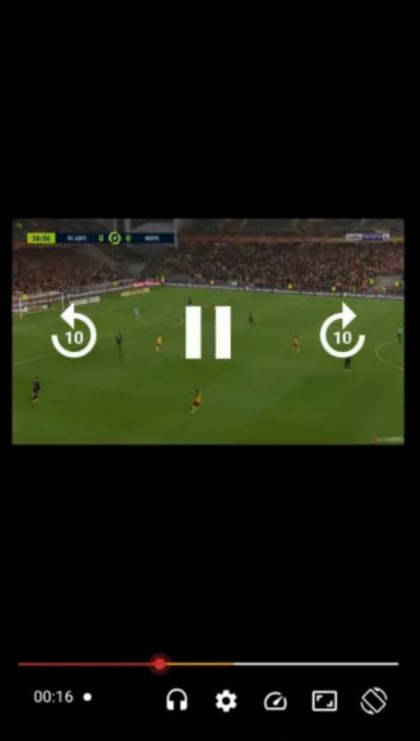
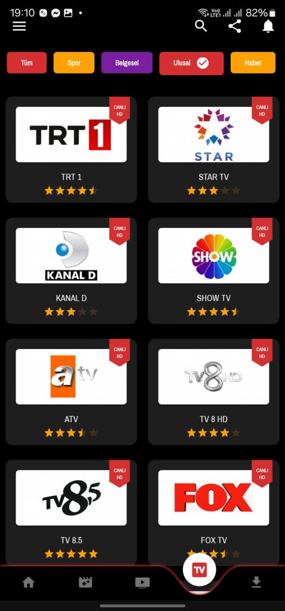
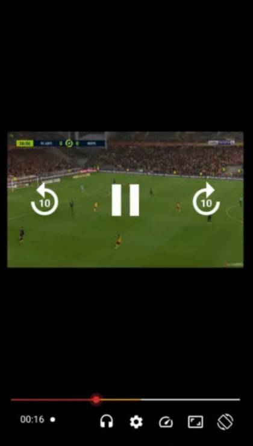
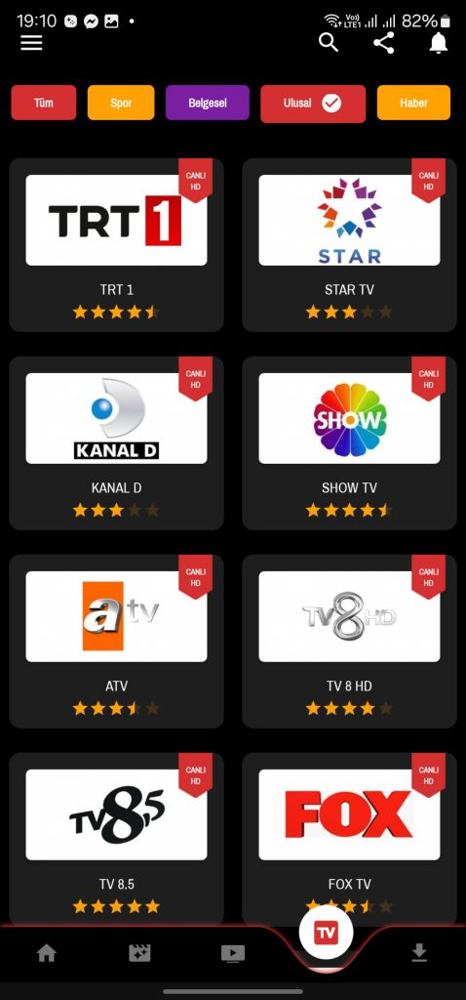
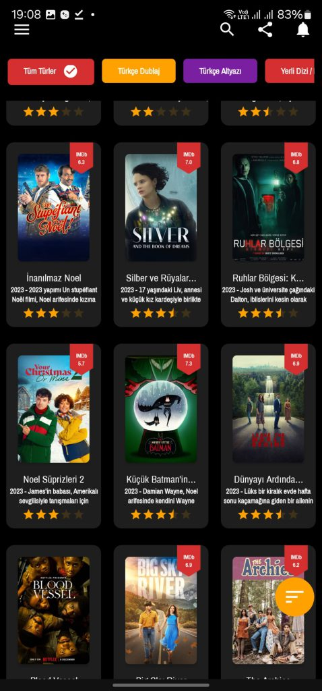
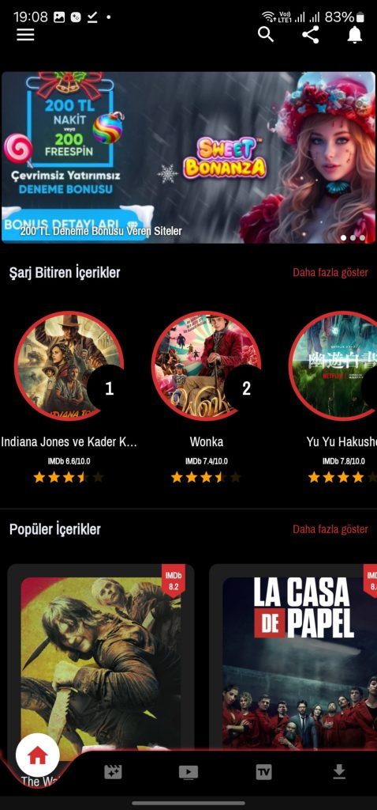
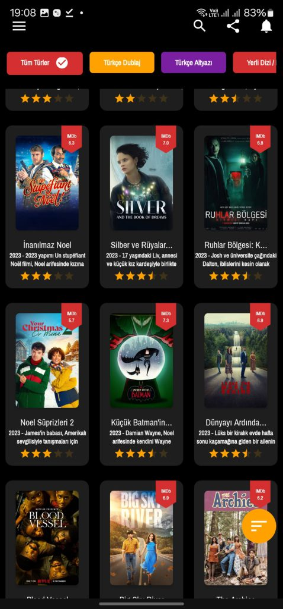
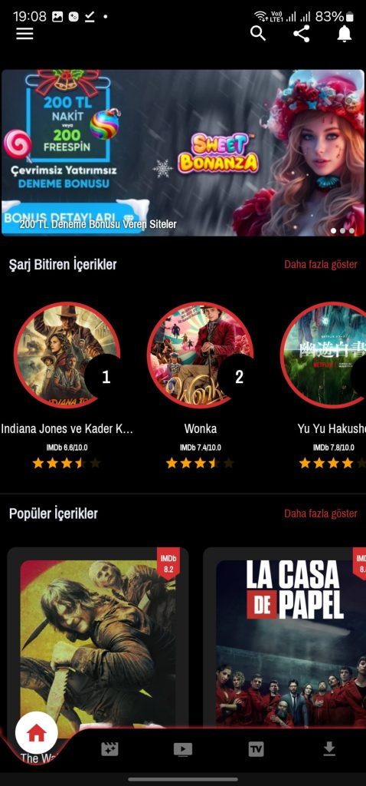

REC TV İndir 2025
Bu sayfa üzerinden REC TV’nin en güncel sürümünü ücretsiz olarak indirebilirsiniz.
Uygulama İçinden Görüntüler

 



 



Uygulama Bilgileri
Adı: REC TV
Versiyon: v16.5
Dosya Boyutu: 8.9 MB
Gerekli Android: 4.0 ve Üzeri
Güncellenmiş: 1 Saat Önce
Özellikler
✔️ Yüksek kaliteli canlı yayın
✔️ Kolay kullanım ve hızlı arayüz
✔️ Güncellenmiş kanal listesi
REC TV Video Özellikleri
🔹 Sınırsız Video Kategorisi: Talk şovları, filmler, diziler ve daha birçok video türü.
🔹 HD Kalitesinde Videolar: 1080p ve 720p yüksek çözünürlük.
🔹 Harika Video Oynatıcılar: Canlı yayınlar ve kayıt seçenekleri.
🔹 Video Kaydı: Canlı ve offline izlemek için videoları kaydetme imkanı.
🔹 Video Kategorizasyonu: Videolar düzenli bir şekilde kategorilere ayrılmıştır.
REC TV Canlı Kanallar
📺 Bein Sports ve Tüm Spor Kanalları: Süper Lig, Şampiyonlar Ligi ve daha fazlası.
📺 Star TV, Show TV, ATV, Kanal D, FOX TV: Tüm popüler ulusal kanallar.
📺 Haber Kanalları: CNN Türk, HaberTürk, NTV ve daha fazlası.
📺 Belgesel ve Çocuk Kanalları: National Geographic, Cartoon Network, TRT Çocuk.
Sıkça Sorulan Sorular
REC TV nasıl kurulur? - APK dosyasını indirip yükleyin.
Güncellemeler nasıl yapılır? - En son sürümü buradan indirebilirsiniz.